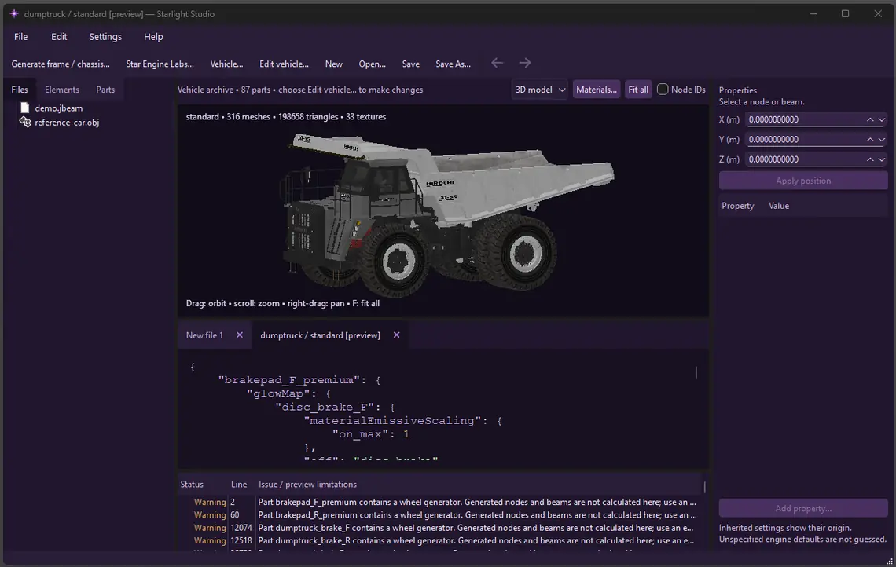
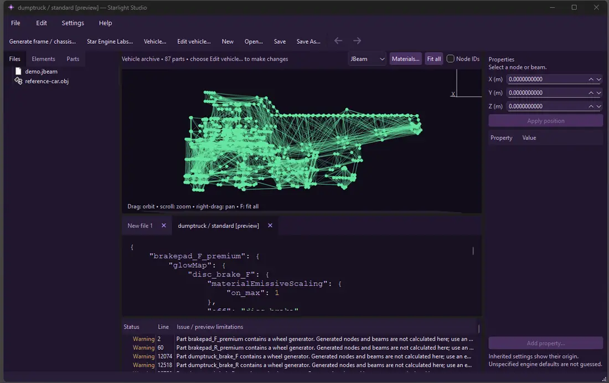
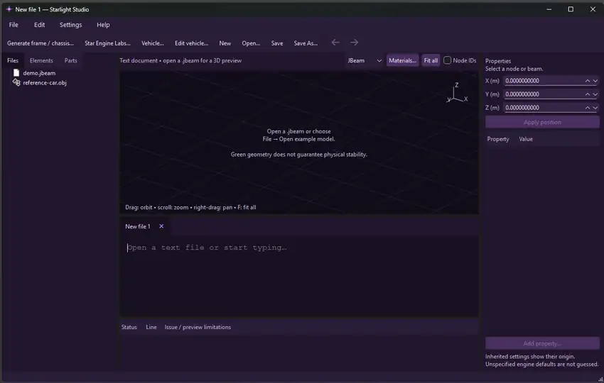

3D + JBeam
See the model and its physical structure.
A modern modding tool for BeamNG.drive.
Create. Inspect. Refine. One workspace built around your ideas.
Early development · No public download available yet

See the model and its physical structure.
Build frames and chassis from a starting point.
Less busywork. More room to create.
Starlight Studio is being built to bring vehicle geometry, JBeam physics and project tools into one focused desktop environment — without hiding how things work.


Real screenshots from an internal build. Vehicle assets shown are part of BeamNG.drive and are used for demonstration only.
STAR-01 BRICK is our simple test vehicle. The next milestone is a reliable export and the first in-game test in BeamNG.drive.
Export validation pendingThe core stays proprietary. A future SDK will support independently developed community extensions. What you create with Starlight Studio stays yours, subject to any third-party rights.